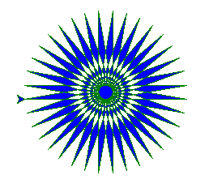

https://github.com/lark-parser/lark
http://blog.erezsh.com/how-to-write-a-dsl-in-python-with-lark/
如何利用 python lark 模組寫 DSL (Domain Specific Language)
Matlab 與 Mathematica 就是 DSL 的典型範例.
首次使用 Logo 時, 感覺跟變魔術沒兩樣. 只要輸入簡短的指令組合, 就能在螢幕畫出非常複雜的圖形.
下面這一段教學, 將要展示如何利用 70 行程式, 透過解讀與解譯過程完成類似 Logo 的程式語言. 延續此一應用, 您將可自行打造自己的語言. 為了完成此一任務, 我們將使用 Lark 解讀程式庫與 turtle 繪圖模組. 讓我們開始!
What is a DSL and why should you care
When writing a software project, you might encounter information that your language of choice isn't very good at expressing or representing. It could be data, configuration, a list of commands, etc. Some abstraction might be missing, the language might prove too verbose, or writing the code might be too error-prone because there's no appropriate validation. When that happens, you might benefit from creating your own language, that describes the information in a clean and concise manner. That's called a "Domain-Specific Language", or DSL.
DSLs tend to be small and concise. And like most things, they have both pros and cons.
DSL Pros:
DSL Cons:
Overall, there are many great reasons to use DSLs, but many programmers choose to avoid it, rightfully fearing the DSL will add complexity and take a long time to write. But, it doesn't have to be this way...
I'm going to take you step-by-step as we write our own DSL, starting with a naive solution, until we reach a working program with a parser and an interpreter. Hopefully, by the end of it I will convince you that DSLs can be a viable and cost-effective choice for your projects.
Designing a language
In this tutorial, we're going to write a DSL for Python's Turtle module! For those who don't know it, it's a Logo-inspired module for drawing vector graphics using simple commands. The first step when designing a language is to learn about the problem we're trying to solve (the domain). So if you never used the Turtle module, it might be prudent to look at some code, browse the docs, or play around with it a little bit.
To summarize, the Turtle module is used via a series of instructions. We can move the "turtle" on the canvas with spatial instructions (left, right, forward, etc.), we can change the size & color of the turtle's pen, instruct it to move with or without drawing, or otherwise alter the state of the turtle and/or window.
The next step is to choose what your language is going to do: Which features or concepts it's going to support, and what you will leave out. To keep this tutorial short, we're going to support only a small subset of instructions:
Now that we know the contents of the language, we can move on to the third step: Choosing a syntax. This step is part common-sense, part art, and part subjective opinion. However, I do believe there are some guidelines that are innately true.
Guidelines to choosing syntax for a language:
For example, Python was aimed at C programmers (among others), so it borrowed C syntax like += for in-place addition , and keywords like break and continue.
For our Turtle DSL, I will borrow my idioms and syntax from Logo, but with a modern twist. We'll use {curly-braces} for code blocks. And since we'll be designing a very small, interpreted language, we can make our basic commands one-lettered.
Here's how a program looks in my imaginary Turtle Language:
c green blue # fg & bg colors
fill { repeat 36 {
f200 l170 # forward & left
}}
But it's not going to be imaginary for long! Let's move on to the practical side of things.
Writing the grammar
Step 1) EBNF
Now that we know what our language looks like, we can to write a formal grammar for it. Later, we will feed our grammar to the parser, so it will know how to parse free-form text written in our language into a structured parse-tree that's easy to work with programmatically.
The standard way to write grammars is in EBNF form, and that's what we'll do in this tutorial. EBNF grammars are basically a hierarchy of rules and strings of the form:
name: production
Where production is a list of names and values.
Or informally:
rule: rule1, "keyword", rule2, rule3, ..
Rules can be recursive, but it's better to describe loops with repetition-operators. For example, this is how I would define Python's dictionary syntax in EBNF:
dict: "{" dict_item* "}"
dict_item: name ":" value
...
This is enough to allow us to describe an instruction in Turtle Language:
instruction: "f" number
| "b" number
| "l" number
| "r" number
| "c" color [color] // bgcolor is optional
| "fill" code_block
| "repeat" number code_block
code_block: "{" instruction+ "}" // one or more instructions
This is an accurate and fairly succinct description of our syntax. We could however make it a little shorter, by avoiding repetition.
instruction: ("f"|"b"|"l"|"r") number
| "c" color [color]
| "fill" code_block
| "repeat" number code_block
code_block: "{" instruction+ "}"
This variation is equivalent to the first one, just a little shorter.
You may have noticed our grammar contains a recursion between "code_block" and "instruction". That's totally fine, this is what parsers live for.
We still haven't defined "number" and "color". We'll do that next.
Step 2) Lark
So far, everything we did was fairly agnostic of a specific parsing library. But now is a good time to introduce Lark.
Lark is an open-source parsing library I spent the last month writing. I know, there are dozens of other parsing libraries. Why introduce yet another one? Here's why:
Lark uses the Earley parsing algorithm, a dynamic parsing algorithm that can handle all context-free grammars, including ambiguous grammars. It also supports a scannerless mode, which means terminals (tokens) are resolved by Earley at parse-time. The end result is that when you write your grammar with Lark, you don't have to worry about restrictions or state-machines. All grammar structures are allowed. If your grammar makes logical sense, Lark can parse it.
Lark is the only library that can make this claim. It also accepts grammars in a convenient EBNF form. It supplies a library of common terminals (i.e. regexps), to save its users from re-inventing the wheel in every grammar. And it can build a parse-tree automatically for every grammar.
Here ends the sales pitch, although I could go on. Let's look at how our grammar will look like in Lark, and I will follow with a thorough explanation:
start: instruction+
instruction: ("f"|"b"|"l"|"r") NUMBER
| "c" COLOR [COLOR]
| "fill" code_block
| "repeat" NUMBER code_block
code_block: "{" instruction+ "}"
COLOR: ("a".."z")+
NUMBER: ("0".."9")+
WHITESPACE: (" " | "\n")+
%ignore WHITESPACE
(If you are following this by trying the the code, that's awesome! Don't forget to escape the '\n'.)
In the first line, we tell Lark that our program is basically a list of instructions.
The next part is literally a copy-paste of our EBNF definition from above, only we change "color" and "number" to their terminal form, and define them.
When names are written in uppercase in Lark, they are treated as terminals. Terminals are a little like rules: They also match input by combining smaller particles. But while rules match structure, terminals match strings. If we defined COLOR as a rule instead (lowercase color), the parser will create structure where it makes no sense (For example, Tree("r", "e", "d") instead of just the string "red").
Another thing about terminals is that they are greedy, which is just what we need in this case.
Then finally, the last line tells lark to ignore whitespace. (Extra information!)
Now it's time to see how we did. Let's run Lark on our sample language using our grammar, and see what we get:
text = """
c red yellow
fill { repeat 36 {
f200 l170
}}
"""
from lark import Lark
parser = Lark(turtle_grammar) # Scannerless Earley is the default
print(parser.parse(text))
We get this:
Tree(start, [Tree(instruction, [Token(COLOR, u'red'), Token(COLOR, u'yellow')]), Tree(instruction, [Tree(code_block, [Tree(instruction, [Token(NUMBER, u'36'), Tree(code_block, [Tree(instruction, [Token(NUMBER, u'200')]), Tree(instruction, [Token(NUMBER, u'170')])])])])])])
Let's make it more readable:
>>> print(parser.parse(text).pretty())
start
instruction
red
yellow
instruction
code_block
instruction
36
code_block
instruction 200
instruction 170
This is much better! We get a tree that correctly represents the structure of our program. However, it's a little hard to tell, because some of the strings are missing! This is by design: Lark automatically removes anonymous strings because it assumes they are just punctuation. This is a very convenient default, and there are several ways to keep the strings. One obvious way is to make them into named terminals. Then they are no longer anonymous, and they will appear in the tree. We're going to do this for movement (b/f/l/r). But we don't really need the strings themselves, we just want to know which instruction was specified. So for the rest, we'll use a more elegant approach: Rename the branches, by using aliases.
While we're at it, let's also simplify the grammar and import some of our terminals from our grammar library, instead of defining them.
Let's just rewrite the grammar, since the change is fairly straight-forward:
start: instruction+
instruction: MOVEMENT NUMBER -> movement
| "c" COLOR [COLOR] -> change_color
| "fill" code_block -> fill
| "repeat" NUMBER code_block -> repeat
code_block: "{" instruction+ "}"
MOVEMENT: "f"|"b"|"l"|"r"
COLOR: LETTER+
%import common.LETTER
%import common.INT -> NUMBER
%import common.WS
%ignore WS
Imported terminals are defined using regular EBNF, just like we defined COLOR and NUMBER. You can see their definition here (common.g).
And when we run the parser again, we get this:
start
change_color
red
yellow
fill
code_block
repeat
36
code_block
movement
f
200
movement
l
170
This parse-tree expresses exactly what we want, and nothing more. That is a good ideal to aspire to: A minimal parse-tree is a happy parse-tree!
Now that we know how to turn free-form text in Turtle Language into a structural tree, it's time to write the actual interpreter!
Interpreting the parse-tree
The purpose of a language is to run free. Let's allow Turtle Language to start running.
It's common practice, when interpreting code, to compile the parse-tree into byte code that can run efficiently, and is more compact. We are not troubled by such earthly concerns; our toy DSL is small and doesn't do much. We are going to do something a little taboo: Run by directly reading from our pretty parse tree.
We will write a function called "run_instruction" that accepts branches of the tree, and executes them according to the branch name.
The Tree class in Lark has two attributes: data, which may contain any value (i.e any Python object), and children, which is a mixed list of Trees and values. So, a single tree structure is just a bunch of Tree instances nested inside each other as children. The Tree.pretty() method, that we saw earlier, just prints out these two attributes in an indented format according to their nesting-level. In the context of a parse-tree, these attributes represent specific concepts:
1. data -> returns the name of the rule that was matched
2. children -> returns the subrules (trees) and tokens (strings) that were matched inside it. This is known as the production, or expansion.
With that knowledge, the function itself is simple:
import turtle
def run_instruction(t):
if t.data == 'change_color':
turtle.color(*t.children) # We just pass the color names as-is
elif t.data == 'movement':
name, number = t.children
{
'f': turtle.fd,
'b': turtle.bk,
'l': turtle.lt,
'r': turtle.rt,
}[name](int(number))
elif t.data == 'repeat':
count, block = t.children
for i in range(int(count)):
run_instruction(block)
elif t.data == 'fill':
turtle.begin_fill()
run_instruction(t.children[0])
turtle.end_fill()
elif t.data == 'code_block':
for cmd in t.children:
run_instruction(cmd)
else:
raise SyntaxError('Unknown instruction: %s' % t.data)
This straight-forward Python code is really all we need to run the instructions.
And now, for the main-loop:
parser = Lark(turtle_grammar)
def run_turtle(program):
parse_tree = parser.parse(program)
for inst in parse_tree.children:
run_instruction(inst)
def main():
while True:
code = input('> ')
try:
run_turtle(code)
except Exception as e:
print(e)
Run this under python, and you can now program interactively in the Turtle Language!
We can also call run_turtle directly:
run_turtle("""
c green blue
fill { repeat 36 {
f200 l170
}}
""")
To get this unblinking eye:

https://github.com/lark-parser/lark/blob/master/examples/turtle_dsl.py
Conclusion
In this tutorial, we implemented a parser and an interpreter in few lines of code, and without having to know many technical details.
We implemented a very small language, but it's easy to extend. Adding commands should be very simple, since the template for that already exists. Adding variables that can be used in expressions won't be much of a challenge either. You can see how Lark's calculator example does exactly that with relative ease. Combining these two grammars with a little bit of glue code, will result in something that feels like a real programming language, albeit simplistic.
I hope I inspired to go and write a DSL for your project. If you need any help in doing so, or if Lark is missing a feature you need dearly, drop me a line and I'll be happy to assist you. You can reach me at erezshin at gmail com.